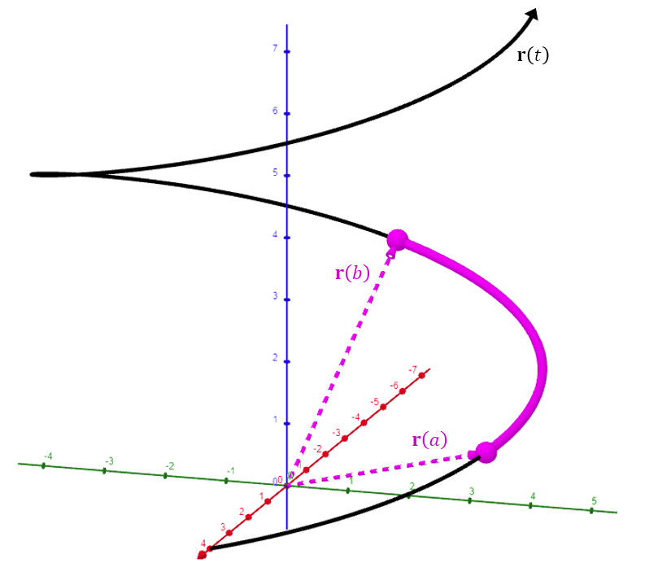

Arc Length
Assume the vector-valued function below traces out a smooth curve in \(\mathbb{R}^3\).
\[ \mathbf{r}(t) = x(t)\mathbf{i} + y(t)\mathbf{j} + z(t)\mathbf{k} \]
The arc length over the interval \(a \le t \le b\) can be calculated via the formula below.
Arc Length
\[ L = \int_a^b \|\mathbf{r}'(t)\|\,dt \]

This formula should make sense. We are integrating speed with respect to time.
This calculates the total distance traveled, or “mileage,” of the particle over the interval \(a \le t \le b\).
An Example
Find the arc length traced out by the vector function below over the interval \(17 \le t \le 71\).
\[ \mathbf{r}(t) = t\,\mathbf{i} + t\,\mathbf{j} + \frac{2\sqrt{2}}{3}\,t^{3/2}\,\mathbf{k} \]
\[ \mathbf{r}'(t) = 1\mathbf{i} + 1\mathbf{j} + \sqrt{2}\,t^{1/2}\,\mathbf{k} \]
\[
\begin{aligned}
\|\mathbf{r}'(t)\| &= \sqrt{1^2 + 1^2 + \left(\sqrt{2}\,t^{1/2}\right)^2} \\
&= \sqrt{2 + 2t}
\end{aligned}
\]
\[
\begin{aligned}
L &= \int_{17}^{71} \|\mathbf{r}'(t)\|\,dt \\
&= \int_{17}^{71} \sqrt{2 + 2t}\,dt \\
&= \frac{1}{3}(2 + 2t)^{3/2} \Big|_{17}^{71} \\
&= \frac{1}{3}(2 + 2 \cdot 71)^{3/2} - \frac{1}{3}(2 + 2 \cdot 17)^{3/2} \\
&= \frac{1}{3}(144)^{3/2} - \frac{1}{3}(36)^{3/2} \\
&= 576 - 72 \\
&= 504
\end{aligned}
\]